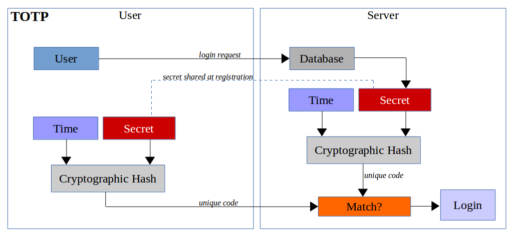

Web Application Security
Andreas Happe
Authentication & Sessions
OWASP Top 10

Identification / Authentication
Identification
- Benutzer “claims” seine Identität
- Verschiedene Möglichkeiten
- Benutzername und/oder Email
- SmartCards
- postIdent, videoIdent, bildIdent
- Häufig mit Authentication in einer Operation
Authentication
- Validierung der Benutzeridentität
- Verschiedene Methoden/Faktoren
- something-the-user-knows
- something-the-user-possesses
- something-the-user-is
- weird stuff: next-cloud video
Kombination mehrerer Faktoren
- Multi-Faktoren-Auth
- Unterschiedliche Faktoren kombinieren
- Beispiel: Bankomatkarte
- Bitte nicht mehr SMS verwenden
- SS7, Sniffer (Nokia 3210), etc.
- Alternative: Mobile-Application
Login-Dialog
Grundprinzip
Keep-it-simple-and-stupid


Login-Dialog: Don’t
- getrennte Benutzernamen- und passwort Masken
- Authentication through Email (u.a. long-term problems)
- HTTP BASIC basierte Authentication (cis..)
- Flash/Silverlight/Java-Applets
Angriff: User Enumeration
Angreifer kann Informationen über Vorhandensein eines Benutzers erraten
“Username nicht bekannt”
Im Login Form einfach: generische Fehlermeldungen verwenden
Problem: was bei User-Anlegen und Passwort-Vergessen Funktionen?
Angriff: Brute-Force
- brutal einfach
- Online vs. Offline Brute-Force Angriff
- Passwortlisten vs. alle-Möglichkeiten-durchprobieren
- Tools: hydra, burp, etc.
Passwortlisten
- Gute Passwortlisten sind mittlerweile verfügbar
- Passwortlisten können auch mittels Webseiten generiert werden
- Passwortlisten werden mittels Deep Learning / AI generiert
Brute-Force Gegenmassnahmen
- Good Password Policy
- Rate-Limits
- (Temporary) User Sperre – DoS Problem
- Multi-Faktor Authentication
Logout-Funktion
- User sollte sich ausloggen können
- User sollte die Möglichkeit besitzen, alle Sessions zu beenden
Passwörter
Evolution der Passwort-Hashes
- Nothing
- Hashes
- Salt+Hashes
- Key-Derivation Functions
- Single-Sign On (?)
Falls Passwörter gespeichert werden..
- niemals plain-text speichern (inkl. Logs, etc.)
- immer eine Key-Derivation Function verwenden (bcrypt, scrypt, pdkdf2)
- Key-Stretching verwenden
- immer in der Applikation verschlüsseln (nicht erst durch DB)
- Gilt auch für Passwort-ähnliche Daten
Passwort Cracking
- offline möglich
- automatisiertes Erkennen bei Offline-Cracking nicht möglich
Frage zur Performance
Hashcat mit einer Geforce GTX 3080
- bei MD5?
- bei bcrypt?
Passwort-Richtlinien
- NIST 800-63-3: Digital Identity Guidelines
- Zwischen 8..64 Zeichen
- Unterscheidung Zeichen und Byte!
- Remove periodic password change requirements
- Drop the algorithmic complexity song and dance
- Require screening of new passwords against lists of commonly used or compromised passwords
- No Password Hints
Screening: Haveibeenpwned.com
- Offline: Passwort-Liste (SHA1): ca. 10 Gigabyte
- Online:
- v1: Übermittlung von Hashes
- v2: k-Anonymity
Haveibeenpwned API v2
- hash = hash(pw)
- hash[0..5] wird zum Server geschickt
- Antwort: Passwort-Hashes die mit den fünf Buchstaben (des Hashes) beginnen und wie häufig das jeweilige Passwort vorgekommen ist
- Benutzer vergleicht nun ob sein hash in der Antwort vorkommt
- Der Service kennt allerdings den konkreten Hash (hoffentlich) nicht mehr
Passwort-Vergessen Funktion
- Keine Passwort-Fragen!
- Meistens per Link in einer Email
- Link sollte nur einmal und nur für den einen Account funktionieren
- Nicht:
- Alternate Transport: z. B. eingeschriebener Brief bei SVA
Passwort neu setzen
Benutzer will sein Passwort ändern
- User muss authenticated sein
- Passwort wird nur für den aktuellen User verändert
- Das alte Passwort muss im Zuge der gleichen Operation erfragt werden
Optionale Funktionen bei Passwort Änderung/Reset
- Notifications versenden
- Notifications out-of-band versenden
- Alle Sessions des aktuellen Benutzers beenden
Recap: Notwendige Funktionen
- Login zur Identifikation/Authentication
- keine User Enumeration
- keine Brute-Force Schwachstelle
- optional MFA
- Logout
- Möglichkeit alle aktiven Logins zu beenden
- optional: Information über eingeloggte Geräte
- Passwort-Funktionen
- Key-Derivation Function oder SSO verwenden
- Passwort-Reset Funktion
- Passwort ändern Funktion
Second-Factor
TOTP
- Time-based One-Time Passwords
- RFC 6238
- Zusammenspiel von Applikation und Authenticator (meist Mobiltelefon)
- Gemeinsames Secret wird vom Server zum Authenticator übertragen
TOTP: Einfacher Aufbau
FIDO2/WebAuthn
- Grundsätzliche Funktion
- Authenticator wird als Gerät des Benutzers registriert
- public/secret key pair wird “quasi” ausgetauscht
- verpflichtend biometrisch oder mittels physischer Interaktion gesichert
- bei dem Authentication-Vorgang wird Public-Key Encryption verwendet
FIDO2: Genereller Aufbau

FIDO2: Registration
JS: Authenticator.authenticatorMakeCredential()

FIDO2: Login

Vergleich FIDO2/TOTP
- Use-Cases
- FIDO2: Hardware zwingend erforderlich
- FIDO2: Netzwerkkommunikation notwendig
- FIDO2: Hardware-Binding möglich
- TOTP: genaue Systemzeit notwendig
- TOTP: kein Hardware-Binding möglich